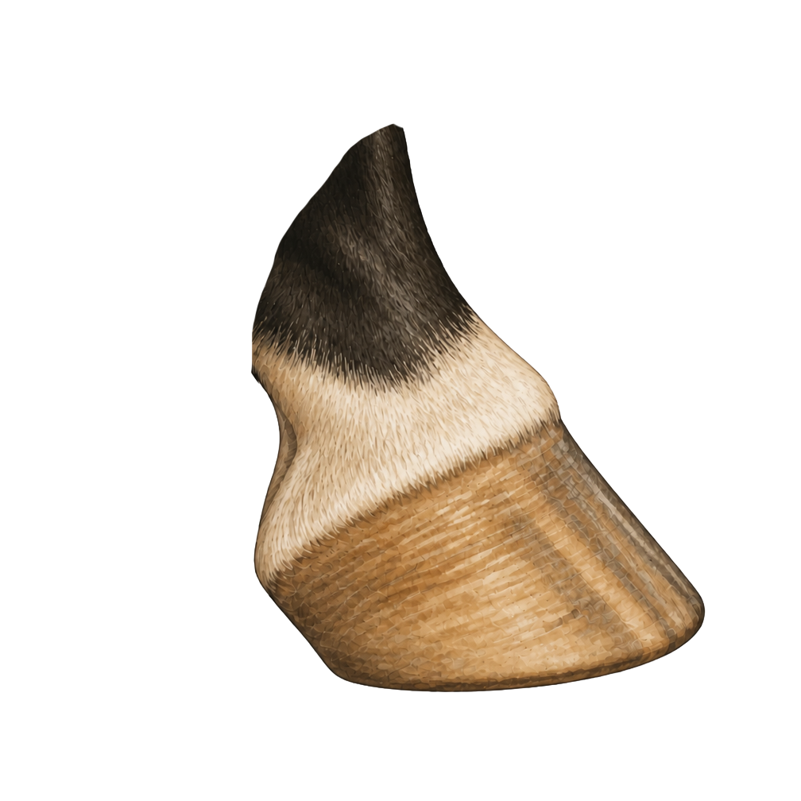
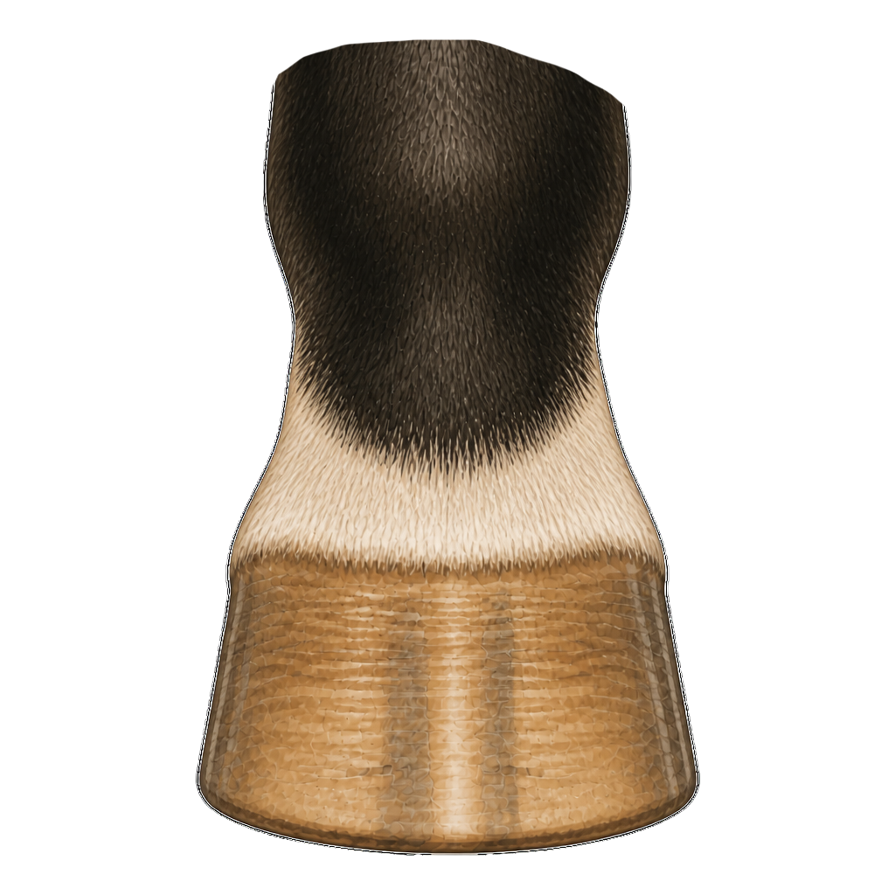
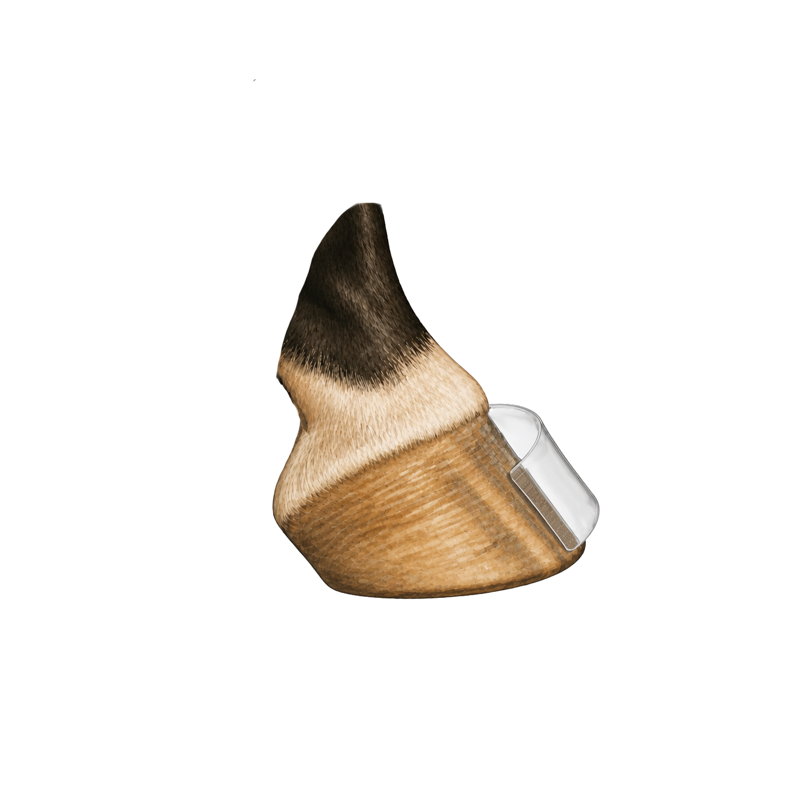
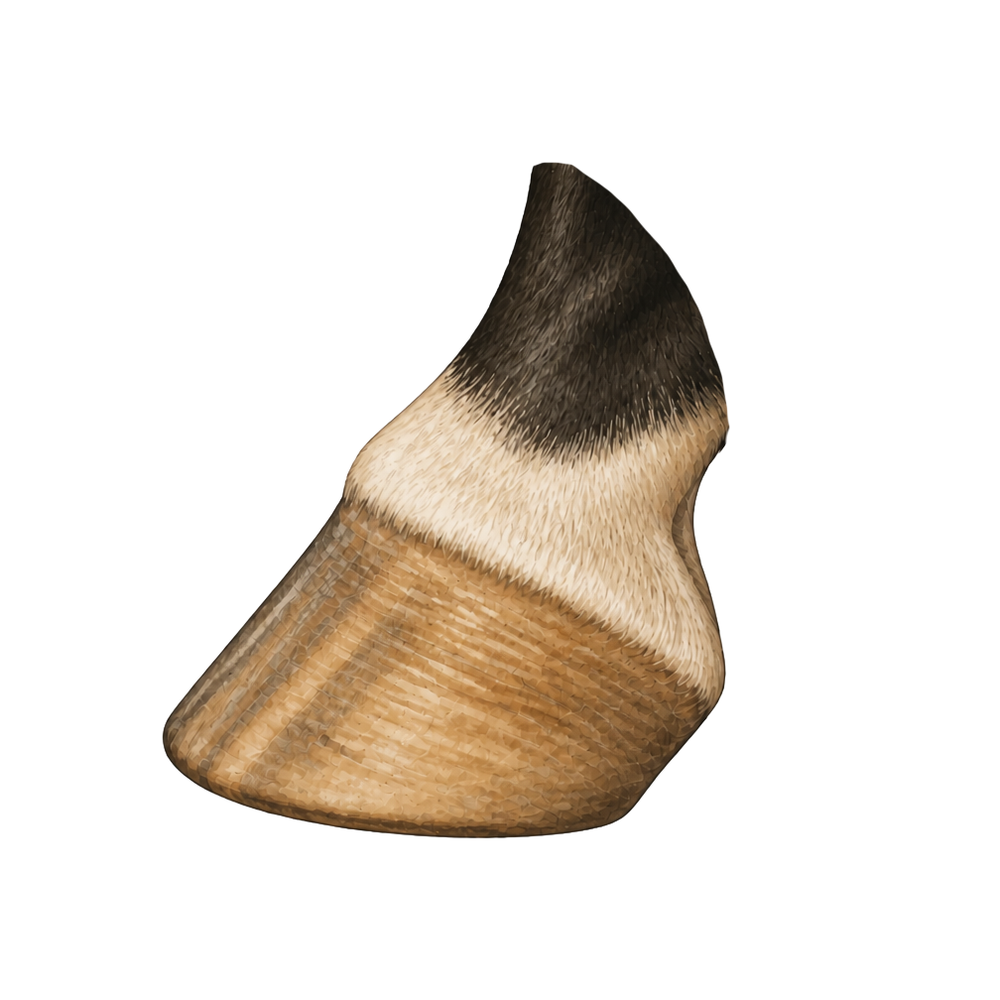

No Hoof, No Horse
The hoof carries the horse's weight, helps absorb concussion, protects sensitive structures inside the foot, and gives the horse traction. Even beginner horse people benefit from knowing the main parts because the hoof is handled every day during cleaning, turnout checks, grooming, farrier work, and soundness conversations.
Learning basic hoof anatomy does not require farrier or veterinary training. It simply requires enough vocabulary to recognize each structure and to describe concerns clearly when help is needed.





Why This Knowledge Helps
Picking Hooves Makes More Sense
Knowing the frog, sole, white line, and bars makes hoof cleaning more thoughtful and changes easier to notice sooner.
Better Barn Vocabulary
Clear terms make it easier to talk with instructors, barn managers, farriers, and veterinarians about observations.
Changes Are Easier to Notice
Cracks, tenderness, trapped stones, unusual odor, or changes around the coronet are easier to report when the landmarks are known.
The Foot Affects the Whole Horse
Hoof balance and comfort influence how a horse stands, moves, and performs. Basic anatomy is the first step in understanding those conversations.